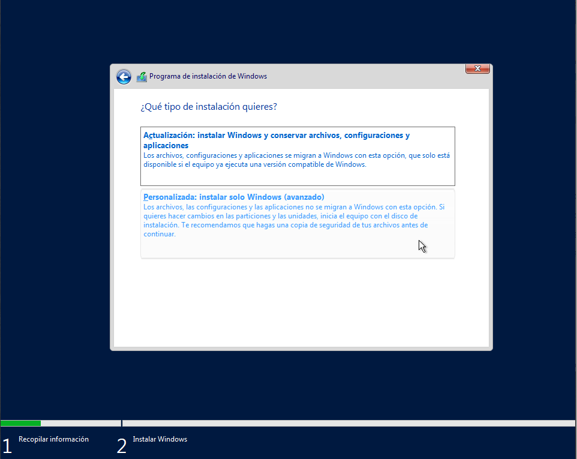
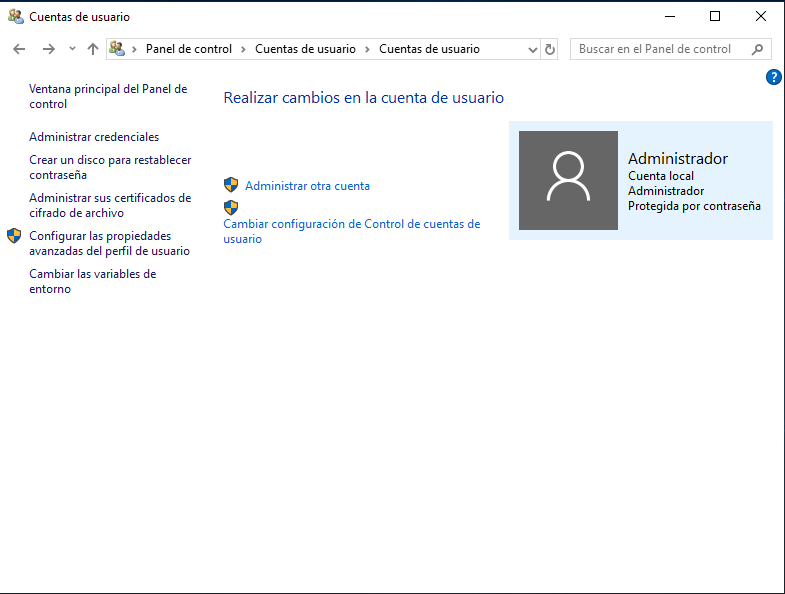
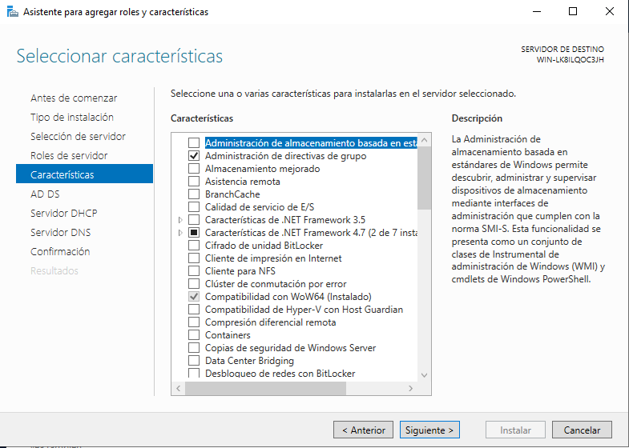
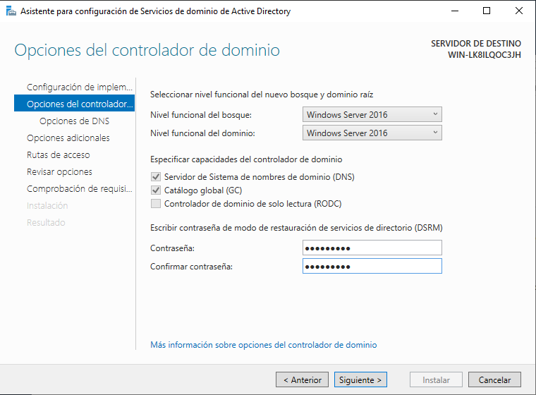
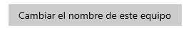
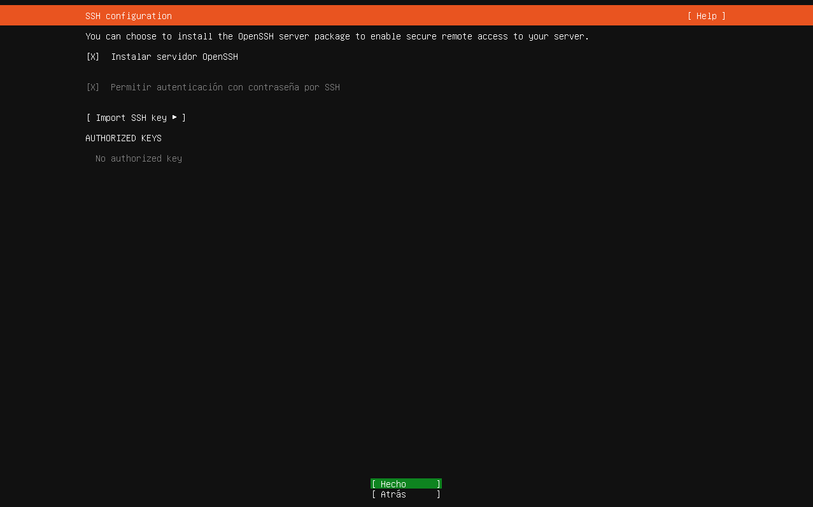
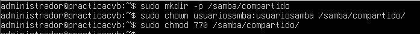
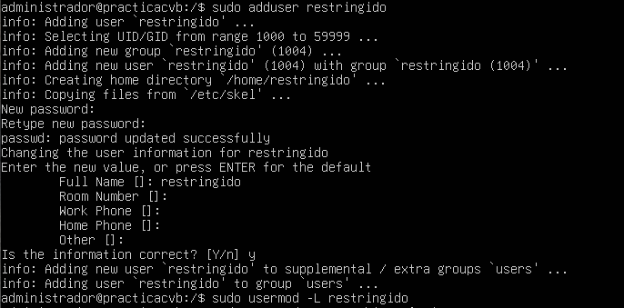
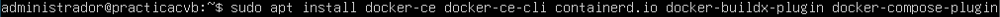

Explicación Práctica
En este página presentaré un proceso de instalación, configuración y administración de entornos virtualizados, para ello, utilizaré como sistemas operativos un Windows 10, un Windows Server 2019 y un Ubuntu Server 24.04.1, como hipervisor utilizaré VirtualBox.
En las siguientes secciones se detallarán los pasos a seguir para el desarrollo de la práctica, y junto a las explicaciones de estos se incluirán imágenes ilustrativas.
Índice
1. Windows 2. Ubuntu 3. Docker 4. PostgreSQLEspecificaciones Máquinas virtuales
- Disco Duro: 40GB
- Memoria RAM: 2GB
- Red: NAT
WINDOWS
Instalación Windows Server 2019
1. Instalamos el programa VirtualBox.
VirtualBox - Pantalla de inicio
2. Configuramos una nueva máquina virtual.
VirtualBox - Creación máquina virtual
3. Ponemos 2048MB (2GB) de memoria RAM.
VirtualBox - Creación máquina virtual
4. Creamos el disco duro virtual.
VirtualBox - Creación máquina virtual
5. Como tipo de archivo de disco duro le pondremos VHD.
VirtualBox - Creación máquina virtual
6. Creamos el disco duro virtual.
VirtualBox - Creación máquina virtual
7. Definimos la ubicación en la que guardaremos el disco duro.
VirtualBox - Creación máquina virtual
8. Esta es la vista final de la configuración de la máquina virtual
VirtualBox - Pantalla de inicio
9. Al arrancar la máquina empezaremos con la instalación del sistema operativo, aquí definiremos el idioma de la instalación, el formatico de hora y la moneda, y el idioma del teclado que usaremos.
Instalador de Windows Server 2019
10. Iniciamos la instalación.
Instalador de Windows Server 2019
11. Elegimos la versión del sistema operativo que queremos instalar.
Instalador de Windows Server 2019
12. Escogeremos personalizada ya que es una instalación sobre limpio.
Instalador de Windows Server 2019

13. Escogeremos el único disco que nos aparecerá, al darle a siguiente empezará la instalación.
Instalador de Windows Server 2019
14. Cuando acabe la instalación y se reinicie el sistema nos saltará la pantalla de personalización de la imagen, en ella introduciremos un usuario con su respectiva contraseña (Administrador/Curso2025 en este caso).
Configuración inicial Windows Server 2019
15. Al pulsar finalizar nos aparecerá el escritorio.
Escritorio Windows Server 2019
16. Ahora procederemos a crear el usuario Practicas, entraremos en el panel de control.
Panel de control
17. Pulsaremos en ‘Cuentas de usuario’ y de nuevo en ‘Cuentas de usuario’.
Panel de control / Cuentas de usuario
18. Dentro ‘Cuentas de usuario’ haremos clic en ‘Administrar otra cuenta’.
Panel de control / Cuentas de usuario / Cuentas de usuario

19. Aquí pulsaremos en ‘Agregar una cuenta de usuario’.
Administración de cuentas

20. Nos saldrá una pantalla para crear el nuevo usuario, crearemos un usuario llamado ‘Practicas’ con contraseña ‘Pract@123’, tendremos que añadir como último valor una pista para la contraseña en caso de extravío de esta.
Creación usuario
21. Pantalla de comprobación de los datos del usuario antes de registrarlo.
Confirmación creación usuario
22. Ahora procederemos a instalar las actualizaciones del sistema operativo, para ello iremos a Configuración al apartado de ‘Actualización y seguridad’, y pulsaremos en ‘Buscar actualizaciones’.
Configuración / Windows Update
23. Después de actualizar el sistema deshabilitaremos el firewall, iremos al panel de control y pulsaremos en ‘Sistema y seguridad’.
Panel de control
24. Entraremos en ‘Firewall de Windows Defender’.
Panel de control / Sistema y seguridad
25. Haremos clic en ‘Activar o desactivar el Firewall de Windows Defender’.
Panel de control / Sistema y seguridad / Firewall de Windows Defender
26. En esta pantalla debemos desactivar el firewall activando las opciones ‘Desactivar Firewall de Windows Defender (no recomendable)’.
Configuración Firewall de Windows Defender
27. Al volver hacia atrás podremos ver el cambio en el firewall.
Panel de control / Sistema y seguridad / Firewall de Windows Defender
28. Ahora activaremos el Escritorio remoto, en primer lugar, iremos a la configuración y entraremos en ‘Sistema’.
Configuración
29. Entraremos en ‘Escritorio remoto’.
Configuración / Sistema
30. Aquí activaremos la opción ‘Escritorio remoto’.
Configuración / Sistema / Escritorio remoto
31. Para empezar con la creación del directorio activo entraremos en el administrador del servidor.
Administrador del servidor
32. Entraremos en el asistente para agregar roles y características que se encuentra dentro de ‘Administrar’.
Administrador del servidor / Asistente para agregar roles y características
33. En tipo de instalación seleccionaremos ‘Instalación basada en características o en roles’.
Administrador del servidor / Asistente para agregar roles y características
34. En ‘Selección de servidor’ seleccionaremos nuestro equipo como servidor.
Administrador del servidor / Asistente para agregar roles y características
35. En ‘Roles de servidor’, seleccionaremos el rol ‘Servicios de dominio de Active Directory’.
Administrador del servidor / Asistente para agregar roles y características
36. El ‘Servidor DNS’.
Administrador del servidor / Asistente para agregar roles y características
37. Y el ‘Servidor DHCP’.
Administrador del servidor / Asistente para agregar roles y características
38. Aceptaremos la instalación de las características necesarias por el rol.
Administrador del servidor / Asistente para agregar roles y características
39. Nos saldrá un aviso por la instalación de los servicios DNS y DHCP.
Aviso de Asistente para agregar roles y características

40. Este aviso se deberá a que el servidor necesitará tener una ip estática, por lo que la debemos de cambiar manualmente.
Configuración TCP/IPv4
41. Las características las dejaremos tal y como están.
Administrador del servidor / Asistente para agregar roles y características

42. Confirmaremos las selecciones de la instalación.
Administrador del servidor / Asistente para agregar roles y características
43. Iniciaremos la instalación y esperaremos hasta que finalice.
Administrador del servidor / Asistente para agregar roles y características
44. Al finalizar la instalación, debemos de configurar el servidor, poniendo en primer lugar que se trata de un nuevo bosque y su nombre de dominio raíz.
Administrador del servidor / Asistente para configuración de Servicios de dominio de Active Directory
45. En ‘Opciones del controlador de dominio’, definiremos características del servidor como los niveles funcionales de dominio y bosque y la contraseña para la restauración (Curso2025).
Administrador del servidor / Asistente para configuración de Servicios de dominio de Active Directory

46. En ‘Opciones adicionales’ elegiremos el nombre de dominio NetBIOS.
Administrador del servidor / Asistente para configuración de Servicios de dominio de Active Directory
47. A continuación, seguiremos hasta la ‘Comprobación de requisitos previos’, en esta le daremos a instalar.
Administrador del servidor / Asistente para configuración de Servicios de dominio de Active Directory

48. Al finalizar la instalación se cerrará la sesión actual, podremos observar que antes del usuario se encontrará el dominio.
Inicio sesión Windows Server 2019
49. Al abrir el administrador del servidor podremos observar un aviso, este nos llevará a la parte final de la configuración de DHCP.
Aviso Administrador del servidor
50. En este asistente definiremos las credenciales que se utilizarán para autorizar al servidor DHCP dentro del directorio activo, después de esto reiniciaremos el equipo.
Asistente posterior a la instalación de DHCP
51. Procederemos ahora a instalar el ‘Servicio de escritorio remoto’, para ello debemos añadir el rol de servidor ‘Servicio de Escritorio remoto’.
Asistente para agregar roles y características
52. En los servicios de rol, agregaremos el servicio ‘Remoto Desktop Session Host’.
Asistente para agregar roles y características
53. Confirmaremos las selecciones de instalación y reiniciaremos el servidor.
Asistente para agregar roles y características
54. Por último, crearemos los usuarios y las unidades organizativas del directorio activo, para ello nos dirigiremos a ‘Usuarios y equipos de Active Directory’.
Administrador del servidor
55. Allí procederemos a crear los usuarios y las unidades organizativas dando clic derecho al nombre del directorio, pulsando en ‘Nuevo’ y en ‘Usuario’ o en ‘Unidad organizativa’.
Administrador del servidor / Usuarios y equipos de Active Directory
56. Elegiremos los datos de los usuarios y/o de las unidades organizativas, de manera que el directorio nos quedara así:
Administrador del servidor / Usuarios y equipos de Active Directory
57. En la unidad organizativa 1 añadiremos a los usuarios ‘Usuario1’ y ‘Usuario2’.
Administrador del servidor / Usuarios y equipos de Active Directory
58. En la unidad organizativa 2 añadiremos a los usuarios ‘Usuario3’ y ‘Usuario4’.
Administrador del servidor / Usuarios y equipos de Active Directory
59. Configuraremos una nueva máquina Windows 10 con las siguientes especificaciones:
VirtualBox - Pantalla de inicio
60. La instalación del sistema será idéntica a la antes explicada para el Windows Server 2016, exceptuando la elección de sistema operativo, para esta instalación elegimos Windows 10 Pro.
Instalador de Windows 10
61. Revisaremos los pasos del 16 al 21 del Windows Server para crear un nuevo usuario, tendrá de nombre de usuario ‘practicas1’ y de contraseña ‘Pract@123’.
Administración de cuentas
62. Deshabilitamos el firewall de Windows.
Configuración Firewall de Windows Defender
63. Habilitaremos el escritorio remoto.
Configuración / Sistema / Escritorio remoto
64. Cambiamos el DNS para que apunte al servidor.
Configuración TCP/IPv4
65. Finalmente, uniremos el equipo al dominio, para ello entraremos en el panel de control y pulsaremos en ‘Mostrar el nombre de este equipo’, ahí pulsaremos ‘Cambiar el nombre de este equipo’.
Panel de control / Sistema y seguridad
Botón cambio de nombre

66. Cambiaremos el miembro de ‘Grupo de trabajo’ a ‘Dominio’ y pondremos el nombre del dominio (practicas.cvb). Nos saldrá el siguiente mensaje para iniciar sesión en el dominio.
Petición de credenciales para unirse al dominio
67. Al darle a ‘Aceptar’ el equipo nos indicará que se ha unido correctamente al dominio.
Aviso cambio en el dominio o nombre del equipo
68. Una vez unido al domino, iniciamos sesión con uno de los usuarios ya creados.
Inicio sesión Windows 10
69. Nos pedirá cambiar la contraseña al iniciar sesión, pondremos ‘Pract@123’.
Inicio sesión Windows 10
70. Como último paso, crearemos una carpeta y la compartiremos con solo permisos de lectura. Crearemos la carpeta ‘PruebaConex’.
Carpeta compartida 'PruebaConex'
71. Haremos clic derecho en ella, propiedades, y nos iremos al apartado ‘Compartir’. Ahí compartiremos la carpeta con el usuario que nos interese, en este caso ‘Usuario1’.
Compartición de carpeta por red
72. Al aceptar nos saldrá una pestaña que nos informará que la carpeta está compartida, además nos indicará cual es la dirección para acceder a ella.
Compartición de carpeta por red
73. Al introducir esa dirección (Podemos cambiar el nombre del equipo por la dirección ip del mismo) nos saldrá una pantalla para introducir credenciales, deberemos iniciar sesión con un usuario autorizado (en este caso ‘administrador’ o ‘Usuario1’) y ya podremos ver la carpeta compartida.
Vista carpeta compartida 'PruebaConex' desde la otra máquina
UBUNTU
Instalación Ubuntu Server
1. Configuramos una máquina virtual con la ISO de Ubuntu server con los siguientes recursos:
Instalador de Ubuntu Server
2. Elegiremos el idioma de instalación.
Instalador de Ubuntu Server
3. Elegiremos el tipo de instalación.
Instalador de Ubuntu Server
4. Configuramos la red.
Instalador de Ubuntu Server
5. Avanzamos hasta la configuración del mirror address, ahí se descargarán repositorios para el sistema.
Instalador de Ubuntu Server
6. Configuramos el esquema del almacenamiento del sistema.
Instalador de Ubuntu Server
7. Configuramos el almacenamiento.
Instalador de Ubuntu Server
8. Configuramos el perfil del sistema, es decir, el nombre del servidor, además debemos elegir un nombre de usuario y su respectiva contraseña.
Instalador de Ubuntu Server
9. No actualizamos a Ubuntu Pro (No afectaría en nada a esta práctica si lo actualizáramos a Ubuntu pro)
Instalador de Ubuntu Server
10. Seguidamente comenzará la instalación, al finalizar deberemos configurar varios aspectos, en primer lugar, el idioma y la distribución del teclado.
Instalador de Ubuntu Server

11. Configuraremos la red automáticamente por DHCP (Este paso se realizará después de que se acabe de instalar completamente el sistema y se reinicie [Paso 14]).
Ubuntu server
Fichero 50-cloud-init.yaml
12. E instalaremos OpenSSH Server.
Instalador de Ubuntu Server

13. Se empezará a instalar el sistema, al finalizar reiniciaremos el sistema.
Instalador de Windows Server 2019
14. Iniciaremos sesión en el sistema con el usuario creado anteriormente.
Ubuntu server
15. Una vez instalado el sistema crearemos cuatro usuarios con diferentes niveles de permiso:
- Administrador: Acceso total al sistema y permisos de superusuario.
- Usuario estándar: Permisos básicos sin acceso administrativo.
- Usuario con acceso a Samba:
Ubuntu server
Ubuntu server
Ubuntu server
Ubuntu server
Ubuntu server
Ubuntu server

Ubuntu server

Ubuntu server
16. Habilitaremos el servicio SSH para acceder remotamente y poder trabajar con el programa Putty desde nuestro equipo local.
Ubuntu server
17. Instalaremos y configuraremos Samba para compartir una carpeta en red. Con este comando instalaremos Samba (La instalación no procede ya que la instale anteriormente en el sistema):
Ubuntu server
18. En el directorio /etc/samba tenemos un archivo de configuración, será necesario que realicemos algunos cambios en ello:
- Añadiremos el nombre del dominio.
- Al final del fichero añadiremos la configuración necesaria de la carpeta que queremos añadir, con esta configuración todos los usuarios podrán acceder a la carpeta:
- Con esta configuración solo podrá acceder el usuario ‘usuariosamba’:
Fichero configuración samba
Fichero configuración samba
Fichero configuración samba
19. Asignamos los permisos para cada usuario en la carpeta compartida y verificamos que desde nuestro propio Windows podemos acceder.
- Verificamos el acceso desde Windows:
Acceso a directorio compartido 'Compartida' desde Ubuntu a Windows

DOCKER
Instalación Docker Engine
1. Para comenzar, actualizaremos la lista de paquetes desde los repositorios que tiene el sistema configurado.
Ubuntu Server
2. Seguidamente instalaremos los ca-certificates para que el sistema maneje certificados SSL/TLS y curl para que nos permita descargar archivos desde la web.
Ubuntu Server
3. Crearemos el directorio /etc/apt/keyrings con permisos 0755 (lectura y ejecución para todos, escritura solo para el propietario). Este directorio se usará para almacenar claves de firma de repositorios.
Ubuntu Server
4. Descargaremos la clave GPG de Docker y la guardaremos en el directorio /etc/apt/keyrings/Docker.asc
Ubuntu Server
5. Otorgaremos permisos de lectura a todos los usuarios para la clave de Docker.
Ubuntu Server
6. Como paso final de la instalación, añadiremos el repositorio a x con el siguiente comando:
echo \ "deb [arch=$(dpkg --print-architecture) signed-by=/etc/apt/keyrings/docker.asc] https://download.docker.com/linux/ubuntu \ $(. /etc/os-release && echo "${UBUNTU_CODENAME:-$VERSION_CODENAME}") stable" | \ sudo tee /etc/apt/sources.list.d/docker.list > /dev/null
7. Instalamos los paquetes Docker.
Ubuntu Server

9. Comprobamos que la instalación ha sido un éxito con un hello-world.
Ubuntu Server
Instalación Docker Compose
1. Para instalar Docker Compose utilizaremos este comando:
Ubuntu Server
2. Verificaremos la instalación con:
Ubuntu Server
3. [OPCIONAL] Si quisiéramos actualizar el software deberíamos utilizar el mismo comando de instalación de nuevo.
Como parte final de la instalación del Docker crearemos un fichero llamado compose.yaml en la ruta /opt.
Ubuntu Server
En este fichero almacenaremos la configuración necesaria para la conexión de postgreSQL al Docker.
Fichero docker-compose.yaml
POSTGRESQL
Instalación en Windows
1. Para comenzar, iremos a la página web oficial de postgresql,desde ahí descargaremos el instalador para Windows.
Página web oficial PostgreSQL

2. Elegiremos la versión que necesitemos, en este caso la última.
Página web oficial PostgreSQL
3. Ejecutaremos el instalador y comenzaremos la instalación.
Instalación PostgreSQL
4. Elegiremos el directorio de instalación.
Instalación PostgreSQ
5. Elegiremos el directorio donde almacenaremos los datos.
Instalación PostgreSQ
6. Definiremos una contraseña para el superusuario postgres (Pondremos ‘Curso2025’).
Instalación PostgreSQ
7. El puerto lo dejaremos como está predeterminadamente.
Instalación PostgreSQ
8. Avanzaremos hasta que empiece la instalación.
Instalación PostgreSQ
9. No lanzaremos el programa ‘Stack Builder’ al finalizar la instalación, ya que no es necesario para esta práctica.
Instalación PostgreSQ
10. Ejecutaremos el SQL Shell.
Búsqueda 'psql' en buscador
11. Pulsaremos enter hasta la opción ‘Contraseña para usuario postgres’, ya que nos conectaremos al server local, a la database postgres, con el puerto predeterminado y el superusuario, pondremos la contraseña antes definida (Curso2025).
Inicialización postgresql
12. Y con esto ya habremos terminado.
Inicialización postgresql
Instalación en Linux
1. Para instalar PostgreSQL en Linux usaremos el siguiente comando:
Ubuntu Server
2. Arrancaremos el servicio.
Ubuntu Server
3. Por último, entraremos en el usuario postgres y seguidamente en el psql.
Ubuntu Server
Instalación en Linux (DOCKER)
1. Para instalar PostgreSQL en Linux mediante Docker usaremos el siguiente comando:
Ubuntu Server
2. Linux descargará e instalará la imagen más actualizada de PostgreSQL, por lo que seguidamente crearemos un contenedor de nombre seresco y contraseña ‘Curso2025’. Los caracteres que devuelve el comando corresponden con el ID del contenedor creado.
Ubuntu Server
Conexión base de datos
1. Para poder conectarnos desde Linux al PostgreSQL que tenemos en nuestra máquina Windows mediante Docker, primero debemos de utilizar el siguiente comando:
Ubuntu Server
2. Empezará a levantar la infraestructura definida en el fichero docker-compose.yaml.
Ubuntu Server
3. Ahora pasaremos a nuestra máquina Windows, en ella descargaremos el programa DBeaver, el cual es un gestor de bases de datos que nos permitirá trabajar más eficientemente, lo descargaremos de su página oficial:
Página web oficial DBeaver
4. Ejecutaremos el programa y generaremos una nueva conexión, rellenaremos los datos de la siguiente forma:
DBeaver
5. Al conectarnos, podremos ver que nos aparecerá la IP de la conexión y (si tiene) las bases de datos creadas en la misma.
DBeaver
Base de datos: Centro Educativo
1. En primer lugar, creamos la base de datos:
DBeaver
2. Crearemos un esquema del centro educativo (Si no se hubiera creado automáticamente al crear la base de datos):
DBeaver
3. Creamos el tablespace ‘seresco’.
DBeaver
4. El usuario ‘user_seresco’.
DBeaver
5. Está es la vista final de la base de datos antes de empezar a crear las tablas:
DBeaver
6. Seguidamente, empezaremos con la creación de las tablas de la base de datos, la primera tabla vamos a explicarla al detalle, pero para las siguientes se mostrará solo su resultado final.
Tabla cursos:
- Pulsaremos click derecho y en “Crear Nuevo Columna”.
- Añadiremos una columna por cada atributo de la tabla.
- Para añadir la función de “Primary key” en el id añadiremos una nueva restricción o “constraint”.
- Creamos los atributos que nos faltan.
- Y la tabla cursos ya estaría hecha:
DBeaver
DBeaver
DBeaver
DBeaver
DBeaver
DBeaver
7. Procedemos con las demás tablas.
DBeaver
DBeaver
DBeaver
8. Por último, crearemos las tablas que unirán a las creadas anteriormente, en estos casos podemos observar que tenemos que crear varias claves foráneas. Para ello, las crearemos en el apartado “Claves foráneas” de la base de datos:
DBeaver
9. Dentro de este apartado elegiremos la tabla de referencia, pondremos un nombre a la clave foránea y le daremos a aceptar.
DBeaver
10. Después de crear las demás claves foráneas quedaría así:
DBeaver
11. Para la tabla Alumnos_Clase_Curso debemos de centrarnos en dos aspectos importantes:
- La clave primaria de esta tabla es compuesta:
- La clave foránea que conecta esta tabla con la tabla clases_curso estará almacenada en esta tabla:
- Después de crear las dos tablas, esta sería su estructura:
- El diagrama de la base de datos en este momento se verá así:
DBeaver
DBeaver
DBeaver
DBeaver
DBeaver
12. Para insertar los datos en las tablas podemos hacerlo gráficamente en las tablas, sin embargo, voy a insertarlas por SQL ya que lo veo más automático y rápido:
- Inserción de datos en tabla alumnos:
- Datos insertados en la tabla:
- Inserción de datos en tabla profesores:
- Datos insertados en la tabla:
DBeaver
DBeaver
DBeaver
DBeaver
13. Continuamos creando una nueva tabla llamada asignaturas, utilizaremos el atributo “título” como clave primaria, ya que en un centro educativo no existen asignaturas con el mismo nombre:
DBeaver

- Inserción de datos en tabla asignaturas:
- Datos insertados en la tabla:
DBeaver
DBeaver
14. Para finalizar, haremos unos cambios propuestos en la base de datos, en primer lugar “Todos los alumnos pasaron a 2A con excepción de Mari Nieves que repitió y se quedó en 1A”:
- Para empezar, vamos a insertar los cursos 1A y 2A en la tabla Clases, en este caso al ser dos datos usaré la interfaz gráfica:
- Después necesitamos añadir cursos a la tabla curso, en este caso añadiremos solo uno:
- Después, añadiremos los datos de las tablas cursos, clases y profesores en la tabla clases_curso (Como solo sabemos un tutor el atributo id_tutor del id 2 quedara como NULL):
- Ahora debemos de introducir los id de los alumnos y los id de clases_curso en la tabla alumnos_clase_curso:
DBeaver
DBeaver
DBeaver
DBeaver
15. Continuamos con “Llegaron a 2A dos alumnos de otra escuela: Emilio Fernández y Noelia Tuero”.
- Añadimos a la tabla alumnos a Emilio Fernández y a Noelia Tuero:
- Por último, añadimos su id a la tabla alumnos_clase_curso:
DBeaver
DBeaver
16. Por último, “Se inauguró un nuevo aula 1B con tutor Vicente Suarez y 3 alumnos: Alejandro Suarez, Pablo Alonso e Ismael Diego”
- Añadimos el aula 1B a la tabla clases:
- Metemos el id de la clase a la tabla clases_curso para ponerle el tutor:
- Para acabar, cambiamos la clase de los alumnos Alejandro Suarez, Pablo Alonso e Ismael Diego por la nueva clase.
DBeaver
DBeaver
DBeaver
Base de datos: Banco
1. En primer lugar, creamos la base de datos:
DBeaver
2. Crearemos un esquema del banco (Si no se hubiera creado automáticamente al crear la base de datos):
DBeaver
3. Adaptamos el código recibido para la creación de la base de datos, de manera que creemos estas tablas:
DBeaver
4. Las inserciones de datos proporcionadas también deben de adaptarse, ya que el código tenía errores como los valores de las fechas o las comillas dobles en vez de simples, así quedarían las tablas con los datos:
- Tabla atraco:
- Tabla banco:
- Tabla contrato:
- Tabla delincuente:
- Tabla juez:
- Tabla sucursal:
- Tabla vigilante:
DBeaver
DBeaver
DBeaver
DBeaver
DBeaver
DBeaver
DBeaver
Base de datos: Banco [Ampliaciones]
1. Empezaremos con herencia de clases, queremos diferenciar dos tipos de empleados (Directivos y Administrativos), por lo tanto, debemos crear tres tablas con relaciones uno a uno:
DBeaver
- Tabla empleado:
- Tabla directivo:
- Tabla administrativo:
DBeaver
DBeaver
DBeaver
Cada empleado debe estar en una de estas tablas (directivo o administrativo), pero no en ambas.
2. Por último, definiremos la relación de muchos a muchos entre las tablas delincuente y banda, previamente eliminaremos la relación directa entre delincuente:
- Para esta tarea simplemente crearemos una banda intermedia llamada delincuente_banda, la cual conectará ambas entidades. Tabla delincuente_banda:
DBeaver